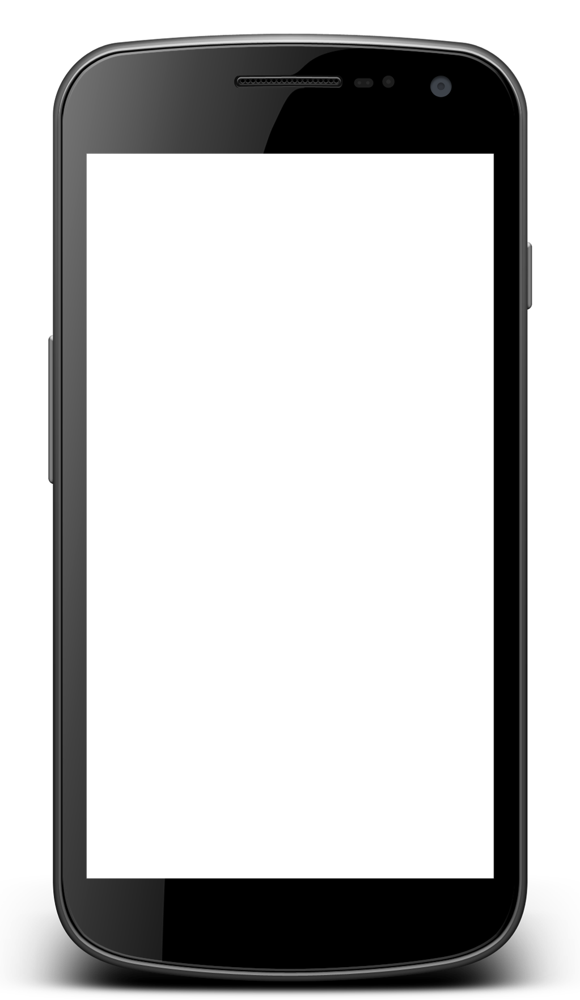

Mobile emulator
Test the mobile version of site with this virtual emulator. Tip: Try to open the emulator within the emulator. Mobile-ception!

Test the mobile version of site with this virtual emulator. Tip: Try to open the emulator within the emulator. Mobile-ception!